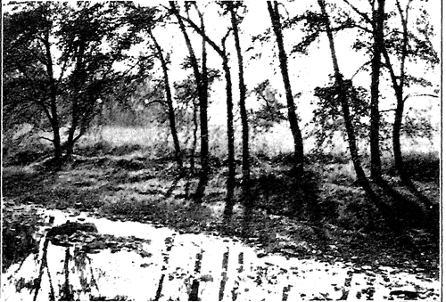
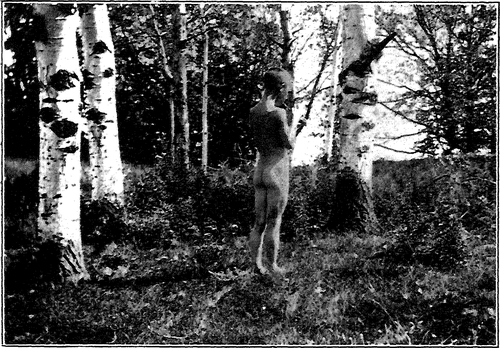

What Is Meant. Continued
Description
This section is from the book "The Natural Style In Landscape Gardening", by Frank A. Waugh. Also available from Amazon: The Natural Style in Landscape Gardening.
What Is Meant. Continued
My friend Dr. Wilhelm Miller in his recent crusade for "the Illinois way" represents a temperate recrudescence of this native plant propaganda. For it is a part of "the Illinois way" to use Illinois plants. The arguments for this way are largely the arguments for a natural style of gardening.
Probably the majority of trained landscape architects when designing in the natural style employ a good many non-indigenous species. Their test is simply that a plant shall be effectively naturalized. Their compositions are pictorial—made to appeal to the eye rather than to a botanical education. If a plant looks perfectly at home it is to all reasonable requirements natural.
This seems to be a safe middle-ground. Certainly he would be a hard theorist and an intolerable puritan who would exclude the common lilac and the homely apple tree from his grounds simply because they are not native to America. It wouldn't be good democratic Americanism, either, for the great bulk of our citizens are derived from foreign stocks.
The anti-straight-line theory as a fundamental element of the natural style seems to have been held by Downing and by Olmsted, Senior. It has been much emphasized by some of their followers; but careful designers have learned that simply to avoid straight lines and radial curves gets one nowhere. It certainly does not lead to naturalness. Indeed, it seems philosophically impossible to found any positive or constructive method on any purely negative dictum.
In order to arrive at a perfectly clear conception of what we now mean when we talk among ourselves about the natural style, it seems best to consider more carefully what is meant by style in landscape gardening. It is one of the unfortunate vagaries of language that this term has assumed a special meaning in landscape gardening distinctly different from what it carries in other arts. In literature, where this other meaning is clearest, style signifies the personal peculiarities of the* author. Mr. William Dean Howells has his style by which his work can be recognized, and David Grayson has his.
In landscape gardening, on the other hand, styles are national—perhaps, more strictly speaking, racial. The Japanese style embodies the garden characteristics of a whole race. The Italian style does the same. Every style which ever had a name was called by the name of the race or nation which practiced it; and one of the questions now before the house is whether we shall ever have an American style.
We may therefore define style, as used in this particular art, as being the expression of the national, racial or ethnic quality in landscape gardening.
But what of the natural and the formal styles of gardening? They do not bear national names, though they have been often and inaptly called the English and the Italian styles. The fact is that these are not styles at all in any strict use of language, but great garden forms. The formal form may be closely compared to poetry and the informal form to prose. Each is a structural method of composition—a form. Poetry is one literary form; prose is another. National or personal styles may be expressed through either of these forms.
Up to this point, therefore, and subject to a very important addition later to be made, we may say that the so-called natural style is really a fundamental garden form. It is a structural form characterized by certain resemblances to the natural landscape. These points of resemblance are sometimes quite arbitrarily chosen by the garden designer, and sometimes quite artificially developed; but it is always the logical aim of the artist to discover and to follow the principles of composition followed by nature.
This structural form is distinguished further, in a purely negative manner, by contrast with the formal garden form, which is symmetrical, balanced, enclosed and determinate, whereas the informal form is unsymmetrical, not obviously balanced, not apparently enclosed and not marked by visible boundaries.
(Our terminology here, where we speak of the formal form and the informal form, is execrable, but it is unavoidable, and the ideas are perfectly definite and logical).
Our partial definition of the so-called natural style of landscape gardening speaks of it in terms of form. But any vital style must have something more than form. It must also have a living, breathing spirit. Any form without spirit is dead and fit only for the crematory.
What then is the informing spirit of the natural style? Is it not the spirit of the natural landscape? We speak of the spirit of the woods, or the spirit of the mountains; and, quite as precisely as common language can ever convey spiritual ideas, we know what we mean. We do actually have a perfectly clear idea in mind when we speak of these things.
The idea is not only clear, but valuable in the highest degree. Our spiritual ideas are always more important than our thoughts about materials; and it is more important to any man—much more important—to know the spirit of the woods or the spirit of the plains or the spirit of the mountains, than to know the properties of benzine or the names of golf clubs or the uses of gunpowder.
It is not difficult to see that this spirit of the landscape is different from the spirit of architecture. Thus any one who is capable of a spiritual conception of any sort can readily accept the principle that, while the formal garden should be animated by the architectural spirit, the informal garden should live by the spirit of the landscape.
We are all so much unaccustomed to thinking in spiritual terms, and the significance of this idea is so essential, that it will be well to spend a little more time upon it. For purposes of illustration let us imagine ourselves sitting on the pasture fence in the friendly sunshine of a warm June afternoon. Before us there spreads, let us say, the rolling green pasture lands, interspersed with scattered oaks, and in the midst a dimpling deliberate river. In the shade of the trees the well-fed cows rest and ruminate. Over all stretches the quiet blue sky, deepening to a purpling haze along the distant horizon as the afternoon wanes. It is a landscape which appeals to every physical sense. We rejoice to be alive in it.
SUNLIGHT IN THE BIRCHES.
PIPES O' PAX.
Photographs by the Author.
But does it not appeal to other than our physical senses? Does it not touch some spiritual sense? As we, civilized human beings, sit there amidst the glory of that June landscape, do we apprehend nothing but the physical landscape? What do we really see? Only the trees and the grass and the river? Only these? If that is really all we see then the good Jersey cow ruminating under the tree has a very substantial advantage over us. She sees the tree and the grass and the river; and besides that she sees a square meal. She crops the grass, drinks the water, retires to the shade of the tree and ruminates.
Do we bring back from that fair landscape anything which we may ruminate? If we really do succeed in capturing something more than what the cow gets, that harvest must be a spiritual product. It is the spirit of the landscape.
There may be men and women who get less from the landscape than the cow does. If there are, I am sure they will not admit it. So perhaps we may let the case rest there for the present. In a subsequent chapter we shall give more extended discussion to the meaning of the native landscape. This is in reality an endeavor to understand the landscape in spiritual terms, and thus to make more clear our full definition which is that the natural style of landscape gardening endeavors to present its pictures in forms typical of the natural landscape and made vital by the landscape spirit.
In this connection it is essential to remember that a good deal of landscape art, and especially that which adopts the natural style, is not required to make every picture out of whole cloth. It might be more accurately described as intelligently letting alone a natural landscape. What does the wise landscape gardener do when called upon to treat a stretch of attractive natural scenery? He must, first and foremost, endeavor to understand the spirit of his landscapes. Then his work will be to simplify and accentuate the characteristic natural forms (chiefly topography and flora), and to clarify and interpret the spirit of the place. This clarification and interpretation of spiritual values is the real work of the real artist.
Continue to: